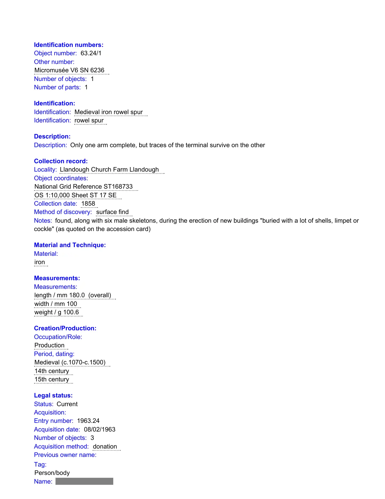

GHF-E106-R33-A2 substantive disclosure
FOI 2026-036: record 63.24/1 rowel spur

Transcript
Identification numbers: Object number: 63.24/1 Other number: Micromusée V6 SN 6236 Number of objects: 1 Number of parts: 1 Identification: Identification: Medieval iron rowel spur Identification: rowel spur Description: Description: Only one arm complete, but traces of the terminal survive on the other Collection record: Locality: Llandough Church Farm Llandough Object coordinates: National Grid Reference ST168733 OS 1:10,000 Sheet ST 17 SE Collection date: 1858 Method of discovery: surface find Notes: found, along with six male skeletons, during the erection of new buildings "buried with a lot of shells, limpet or cockle" (as quoted on the accession card) Material and Technique: Material: iron Measurements: Measurements: length / mm 180.0 (overall) width / mm 100 weight / g 100.6 Creation/Production: Occupation/Role: Production Period, dating: Medieval (c.1070-c.1500) 14th century 15th century Legal status: Status: Current Acquisition: Entry number: 1963.24 Acquisition date: 08/02/1963 Number of objects: 3 Acquisition method: donation Previous owner name: Tag: Person/body Name: Address: Name/Corporate name: Address: Cogan Pill Town/City: Penarth
Read more
Record created: 10 November 1998 00:00:00 Entry date: 08/02/1963 Storage information: Object status: Object in the collection Permanent location: box M02.03 Location status: location verified by SI Location date: 25/06/2015 Environmental conditions: 2. Inherently unstable Notes: Object removed from Origins gallery on 7th July 2014. Location and movement: Status: Previous Location: The Knight End date: 25/04/2007 Status: Previous Movement: Warrior Society 08/12/2007 08/12/2007 Origins - Warrior Society Location: Origins - Warrior Society Start date/Permanent location date: 08/12/2007 Status: Previous Location: Origins box 1 Start date/Permanent location date: 28/07/2014 Notes: Object removed from Origins gallery on 7th July 2014 and placed in temporary box _Origins box 1. Status: Current Location: box M02.03 Start date/Permanent location date: 25/06/2015 Condition control: Status: Current Reason for condition check: Outward loan condition check Condition: Stable Completeness: Incomplete Missing end of one "arm" and two of the teeth on the spur Condition checker: Abbeyfield Gwent Extra Care Soc. Control date: 06/06/2006 Ordered treatment: - Treatment not required Notes: Stripped and appears to be waxed. Reproduction: Reproduction: Digital Image Multimedia: Multimedia: 21882 - black & white negative photograph - no details unknown System info: Record created: 17 October 1994 00:00:00 Record created by: Last update: 25 June 2015 12:43:12 Record updated by: Record status: Validated record
Artifact description
The records team discloses further material, including a waterwheel record and an estate sale document page, from additional searches.
| Catalogue ID | GHF-E106-R33-A2 |
|---|---|
| What it is | PDF document from Amgueddfa Cymru - Museum Wales. Attached to an email received on 5 October 2026, their reference FOI 2026-036. 3 pages. |
| From | Amgueddfa Cymru - Museum Wales |
| Email received | 5 October 2026 |
| Their reference | FOI 2026-036 |
| Pages | 3 |
| File | 63.24.1.pdf (68 KB) |
| State | Read |
Our integration
Part of the FOI thread with Amgueddfa Cymru - Museum Wales opened 8 September 2026. The thread's standing classification is “partial”. Statutory time: met.
Concern to test: whether this reply answers the question as asked, or a narrower one. Not checked against the original request wording here.
Related: GHF-E106-R33-A1 — FOI 2026-036: letter of 22 Nov 1931, file 63.24 · GHF-E106-R33-A3 — FOI 2026-036: record 63.24/2 spearhead · The covering email · What They Don’t Say: WTDS-d0868f91-1, WTDS-d0868f91-2, WTDS-d0868f91-3, WTDS-d0868f91-4 · EV-0297 in the evidence catalogue · Timeline · Disclosure Dartboard